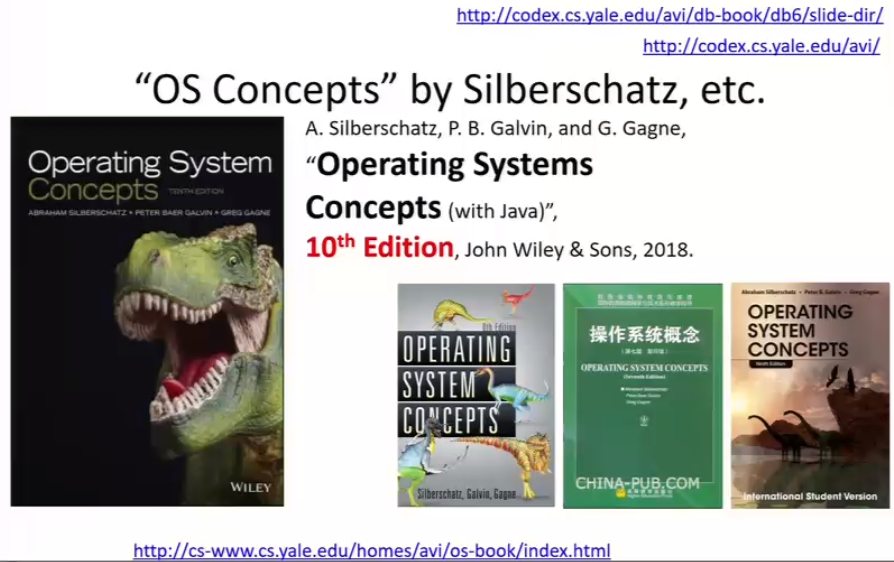
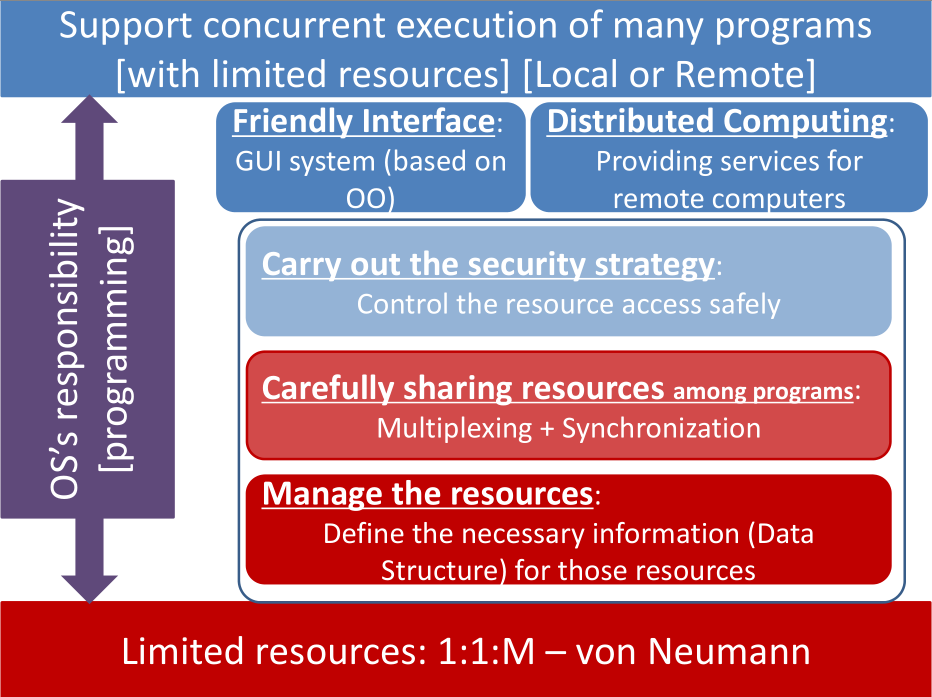
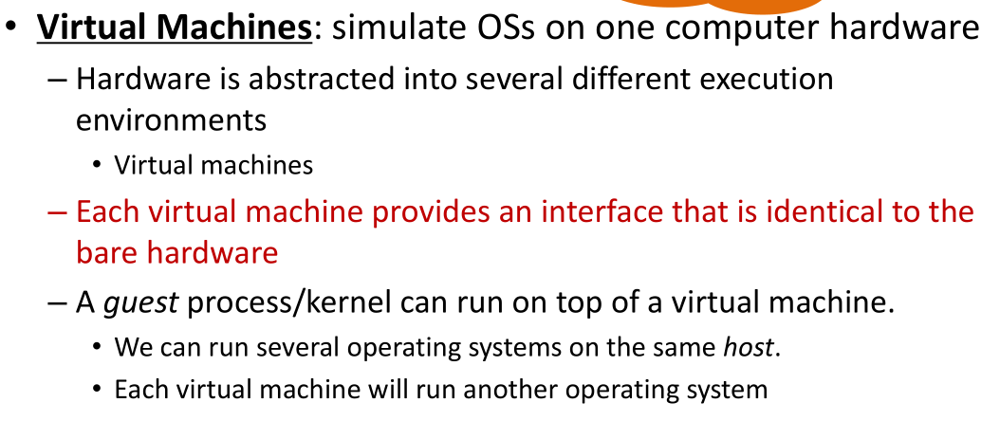
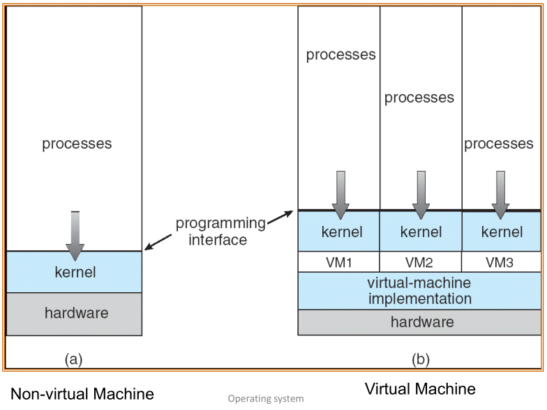
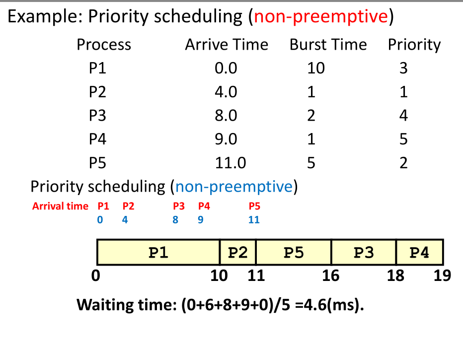
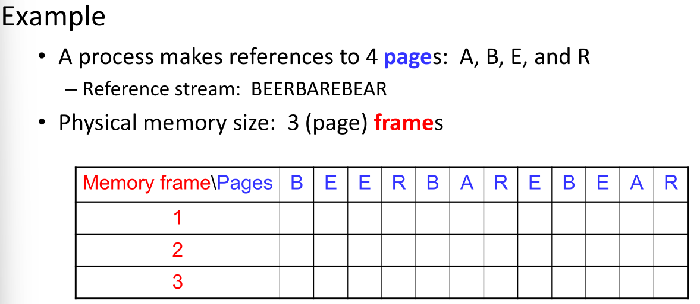
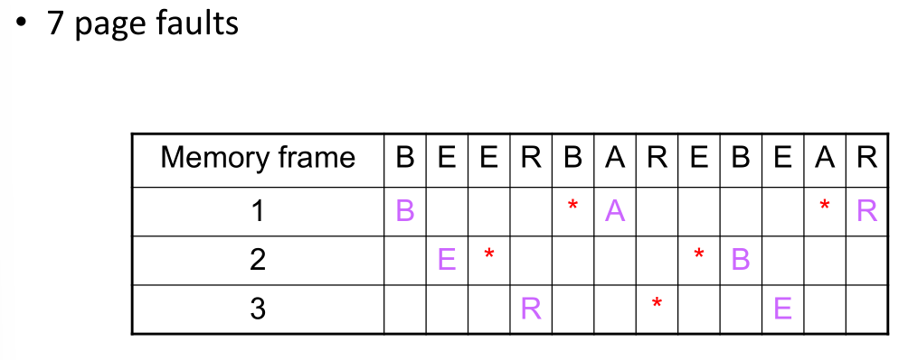
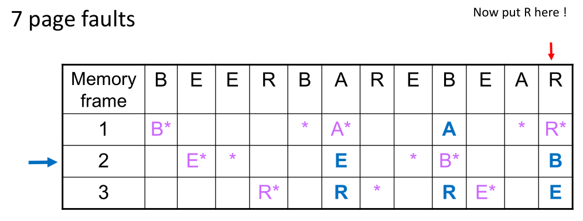
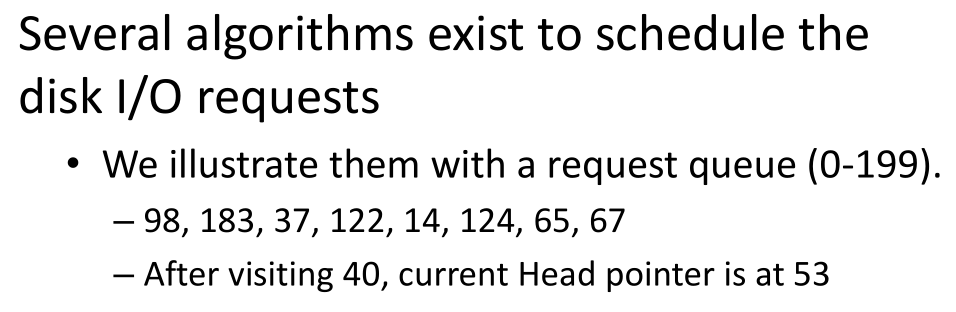

教师信息考核设计成绩构成参考文献1. IntroductionOutline2. OS's Construction2.1 Problems and Ideas in OS2.1.1 Complexity is caused by the resource2.1.2 Concurrency makes OS more complicated2.1.3 Problem of resource competition2.1.4 Class Structure2.2 Construct OS2.2.1 Simple structure/monolithic structure2.2.2 Modular, Layered, Microkernel2.2.3 Trend - Virtual machine2.3 How do user use the function defined in OS2.4 How to load and run OS3. Proccess & Thread3.1 Process3.2 Thread4. CPU Scheduling4.1 Basic Concept4.2 Scheduling Criteria & Metrics4.3 Different Scheduling AlgorithmsFCFS first Come First Serve SchedulingShortest Job First SJFShortest-Remaining-Job-First SRJFPriorityRound-Robin SchedulingOther4.4 Algorithm EvaluationDeterministic modelingSimulation5. Synchronization5.1 Background & basic conecpts5.2 Problems & Solution for synchronization5.2.1 ProblemsProducer/Consumer ProblemSoftware solutionHardware solutionMachine Instructions for Mutual ExclusionOperating System solutions5.2.2 Tasks5.2.3 Solutions6. Deadlock6.1 Deadlock6.1.1 Definition, Model6.1.2 Four necessary conditions6.2 Methods for Handling Deadlocks7. Memory7.1 Basic conecpts7.2 Basic techniques of real memory management7.2.1 Partitioning (Static & Dynamic)placement算法replacement算法7.2.2 Overlay7.2.3 Dynamic Linking7.3 Old way for OS space7.4 Paging7.4.1 Basic paging7.4.2 Paging-bsed VMSteps in handling a Page FaultEffective Access Time (EAT)Impove7.4.3 Page replacement algorithmsFIFO/FCFSOptimal Page ReplacementLRU PolicyClock PolicyDoes adding RAM always reduce misses?Thrashing7.5 Segmenting7.5.1 Basic segmenting7.5.2 Segmentation-based VMM7.6 Segment-page scheme(Hybrid)8. IO8.1 General structure to connect devices8.1.1 IO devices - Categories8.1.2 IO operationsDevice controller8.2 Taking(Magnetic) Disk for instance8.2.1 So-called "linear address sector space"8.2.2 Organize sectors into partitions, so-called "linear addressed block space"Organize sectors ino block8.2.3 Optical disk is similar9. File System9.1 Organize blocks into semantic regions9.2 Free space9.2.1 Free-Space ManagementBit Vector(Bit map:位图)Linked list9.3 Map a file into blocks9.3.1 Contiguous Allocation 连续9.3.2 Index Allocation9.4 How to organize so many files?10. IO System(Other)10.1 Scheduling algorithms for disk I/O requests算法10.1.1 FCFS 先来先服务10.1.2 SSTF 最短寻道时间优先10.1.3 elevator algorithm电梯算法SCANC-SCANLOOKC-LOOK10.2 SPOOLING10.3 RAID10.3.1 strip10.3.2 Hamming Code10.3.3 RAIDRAID 0 RAID 1RAID 2RAID 3RAID 4RAID 5RAID 610.3.4 NAS, SAN10.3.5 USB10.3.6 5G
教师信息
YF809 mlinking@126.com
考核设计
4 quiz in this class 5 small projects in this class
成绩构成
参考文献

Msys2
Machine Cycle:
- Fetch
- Decode
- Execuate
1. Introduction
Outline

2. OS's Construction
2.1 Problems and Ideas in OS
2.1.1 Complexity is caused by the resource
2.1.2 Concurrency makes OS more complicated
2.1.3 Problem of resource competition
- Data inconsistency
- Security
- Multi-processor system
2.1.4 Class Structure

2.2 Construct OS
We can distill 4 kinds of resources / concepts
- CPU,
- Main Memory
- Hard Disk
- File
2.2.1 Simple structure/monolithic structure
2.2.2 Modular, Layered, Microkernel
2.2.3 Trend - Virtual machine
multiplexing computers


2.3 How do user use the function defined in OS
- System Call/API
2.4 How to load and run OS
when turn on the power of computer, run ROM.
- POSE
- BIOS
- Boot Loader
3. Proccess & Thread
3.1 Process
• PCB (Process Control Block) is the one used/named data structure
- Process location information
- Process identification information
- Process state information
- Process control information
Process Location Information: Each process image in memory
may not occupy a contiguous range of addresses ( depends on memory management scheme used, which will be discussed in later MM part ).
- both a private and shared memory address space can be used.
Process Identification Information: A few numeric identifiers may be used
Unique process identifier (PID) –
- indexes (directly or indirectly) into the process table.
User identifier (UID) –
the user who is responsible for the job.
- Identifier of the process that created this process (PPID).
Processor State Information: Contents of processor registers
- User-visible registers
- Control and status registers
- Stack pointers
Process Control Information: Scheduling and state information
Process state (i.e., running, ready, blocked...)
Priority of the process
Relationship with other processes
- the process is waiting (if blocked).
- other PCBs for process queues, parent-child relationships and other structures
Process Transitions (1)
Ready → Running
- When it is time, the dispatcher selects a new process to run.
Running → Ready
- the running process has expired his time slot.
- the running process gets interrupted because a higher priority process is in the ready state.
Process Transitions (2)
Running → Waiting
When a process requests something for which it must wait:
- a service that the OS is not ready to perform.
- an access to a resource not yet available.
- initiates I/O and must wait for the result.
- waiting for a process to provide input.
Waiting → Ready
- When the event for which it was waiting occurs.
Schedulers
- Long-term scheduler --jobs
- Short-term scheduler --processes
- Mid-term scheduler -- swap some process
IPC： Inter-Process Communication
Cooperating processes require an inter-process communication (IPC) mechanism that will allow them to exchange data and information.
There are two fundamental models of inter-process communication:
Shared memory
Message passing
- message passing interfaces, mailboxes and message queues
- sockets, STREAMS, pipes
3.2 Thread
Process switching is EXPENSIVE!
Concept of Process has two facets A Process is:
A Unit of resource ownership – process is allocated:
- a virtual address space for the process image
- control of some resources (files, I/O devices...)
A Unit of execution/dispatching - process is an execution path through one or more programs (functions, code segments)
- may be interleaved with other processes
- execution state (Ready, Running, Blocked...) and dispatching priority
– The unit of resource ownership is referred to as a Task or (for historical reasons) also as a Process. – The unit of dispatching is referred to a Thread.
进程内部支持cpu切换
4. CPU Scheduling
4.1 Basic Concept
CPU-I/O Burst
- Burst/Service time = total processor time needed in one CPU-I/O burst cycle.
- Jobs/Process with long CPU burst time are CPU- bound jobs/processes and are also referred to as “long jobs/processes”.
- Jobs with short CPU burst time are IO-bound jobs/processes and are also referred to as “short jobs/processes”.
- CPU-bound processes have longer CPU bursts than I/O-bound processes.
4.2 Scheduling Criteria & Metrics
Parameters to evaluate the scheduling
CPU utilization [ CPU 使用率 ] ( Efficiency )
- keep the CPU as busy as possible (from 0% to 100%)
Fairness: each process gets a “fair share” of the CPU
Throughput [ 吞吐量 ]
- of processes that complete their execution per time unit
Turnaround time [ 周转时间 ]
- amount of time to execute a particular Process • i.e. execution time + waiting time
Waiting time [ 等待时间 ]
- amount of time a process has been waiting in the ready queue
Response time [ 响应时间 ]
- amount of time it takes from when a request was submitteduntil the first response is produced , not output (for time-sharing environment)


Scheduling Algorithms
First Come First Serve Scheduling [ 先来先服务 ] ( Non-preemptive )
Shortest Job First Scheduling [ 最短任务先服务 ]
- SRTF (Shortest Remaining Time First Scheduling)/SRJF
Priority Scheduling [ 优先权 ]
Round-Robin Scheduling [ 时间片轮转 ]
Multilevel Queue Scheduling [ 多层次队列 ]
- Multilevel Feedback-Queue Scheduling [ 多层次反馈队列 ]
Lottery Scheduling [ 抽彩 ]
4.3 Different Scheduling Algorithms
FCFS first Come First Serve Scheduling
先来先做
画甘特图
Shortest Job First SJF
最短先做

Determining length of next CPU Burst

Shortest-Remaining-Job-First SRJF
剩的最少先做

Priority
越小等级越高
Preemptive 和 Non- preemptive的区别：Preemptive在有新进程加入中也是一个调度时间

Aging - 随等待时间更多，优先级提高
Round-Robin Scheduling
Preemtive, 将CPU服务轮换切片
Short quantum: great response/interactivity but high overhead
- Hopefully not too high if the dispatcher is fast enough
Long quantum: poor response/interactivity, but low overhead
- With a very long time quantum, RR Scheduling becomes FCFS Scheduling
Advantages
- Jobs get fair share of CPU
- Shortest jobs finish relatively quickly
Disadvantages
Poor average waiting time with similar job lengths
- Example: 10 jobs each requiring 10 time slices
- RR: All complete after about 100 time slices
- FCFS performs better!
Performance depends on length of time-slice
- If time-slice too short, pay overhead of context switch
- If time-slice too long, degenerate to FCFS
Other
- Multilevel Queue
- Multilevel Feedback Queue
- Lottery Scheduling
- Highest Response Ratio Next
4.4 Algorithm Evaluation
Deterministic modeling
Simulation
5. Synchronization
5.1 Background & basic conecpts
Race condition 多线程冲突 critical section 临界区（共享数据）
Concurrent processes -> Deadlock No controlled access -> Data Inconsistency
5.2 Problems & Solution for synchronization
5.2.1 Problems
Producer/Consumer Problem
多Producer 和 Consumers 会覆盖
好的mutual exclusion还要考虑deadlock和starvation
Rules for robust synchronization
- Mutual exclusion should be guranteed
- Progress (deadlock-free)
- Bounded (starvation-free)
Software solution
Peterson's algorithm -2 processes is correct
Hardware solution
Uniporcessor could disable interrupts Modern machines provide special atomic(non-interruptible) hardware instructions:
- Either test memory word and set value at once.
- Or swap contents of two memory words.
Test and Set
boolean TestAndSet(boolean *target) { boolean rv = *target; *target = TRUE; return rv;}boolean lock = FALSE;do { while (TestAndSet(&lock)) ; critical section lock = FALSE; remainder section}Swap
xxxxxxxxxxvoid Swap(boolean *a, boolean *b) { boolean temp = *a; *a = *b; *b = temp;}boolean lock = false;do { key = true; // key is a local variable while (key == true) Swap(lock,key); critical section lock = false; remainder section} while (TRUE);Machine Instructions for Mutual Exclusion
lock + Manager + Waiting Room
Operating System solutions
Semapore（必考）
counting Semaphore

5.2.2 Tasks
- Mutual exclusion
- deadlock-free
- starvation-free
5.2.3 Solutions
- Lock
- PV
- SEMAPHORE/MONITOR
6. Deadlock
6.1 Deadlock
6.1.1 Definition, Model
- A set of blocked processeseach holding some resources and waiting to acquire aresource held by anotherprocess in the set.
- None of the processes canproceed or back-off ( releaseresources it owns )
6.1.2 Four necessary conditions
- Mutual Exclusion [互斥]
- Hold-andWait [占有并等待]
- No preemption [非抢占]
- Circular Wait [循环等待]
6.2 Methods for Handling Deadlocks
- Providing enough resources
Staying Safe
Preventing Deadlocks Do not allow one of the four conditions to occur 打破4个条件的成立(主要打破Hold and Wait和 Circular Wait)
Negating Hold and Wait
- 进程运行之前把其所有条件都满足
- 每有一个新请求就把之前的释放然后再打包
Negating Circular Wait
Order resource allocation资源顺序分配法

Avoiding Deadlocks 每一次请求先判断 considers the resources currently available , the resources currently allocated , and the future (Needed) requests and releases of each process, and decides whether the current request can be satisfied or must wait to avoid a possible future deadlock. available = total resource - max 然后选need再一步步来得到序列
Living Dangerously
Let the dead happen, then detect it and recover from it
- Process Termination
- Resource Preemption
Ignore the risks
7. Memory
MAPPING 1 - map files into main memory
- Basic: fundamental ideas nd old ways
- Advanced: so-called virtual memory
MAPPING 2 - map files into persistence storage medias(HDD)
- Basic: fundamental understanding about HDD space
- Advanced: File system
- Other: RAID, Spooling, etc.
7.1 Basic conecpts
- From Logic address to physical address
- MMU for relocation - address translation
From program to process
- Static & Dynamic linking
Requirements of MM
7.2 Basic techniques of real memory management
7.2.1 Partitioning (Static & Dynamic)
partition and swapping static固定切，dynamic动态切
placement算法
Equal-size partitions:
- If there is an available partition, a process can be loaded into that partition – because all partitions are of equal size, it does not matter which partition is used.
- If all partitions are occupied by blocked processes, choose one process to swap out to make room for the new process.
Dynamic Partitioning Placement Algorithms
- Best-fit algorithm最佳匹配找最小可以实现的
- Worst-fit最差匹配与best-fit相对
- First-fit 首次匹配 最开始能够匹配的位置
- Next-fit 临近匹配 从上一次place的地方开始
Internal/External Fragmentation
- Internal Fragmentation 内碎片，分配在内存内部没有使用的内存
- External Fragmentation
compaction 压缩
replacement算法
discuss in virtual memory
7.2.2 Overlay
once known as "Virtual Memory For 640K DOS"
7.2.3 Dynamic Linking
dll
7.3 Old way for OS space
Knuth's Buddy System 二分法切割，产生内碎片
7.4 Paging
7.4.1 Basic paging
fixed partitioning but with smaller size
- It “partition/cut” the logical space of a process into pages [页]
- It “partition/cut” the physical space of MM into frames [帧]
page数据结构
| Page | Frame |
|---|
OS should know the mapping relationship between pages of that process and frames of the MM

0 - > 2; physical address = offset * pagesize
7.4.2 Paging-bsed VM
Steps in handling a Page Fault

Effective Access Time (EAT)
p means page fault rate
Impove
The solution could be derived from the EAT equation - Improve the access speed, and decrease the page fault
keeping page table in a higher access speed media
- Cache, and TLB(translation lookaside buffer)
Prefeching the possible future accessed pages
7.4.3 Page replacement algorithms

FIFO/FCFS
first in first out

Optimal Page Replacement
Impossible to implement (need to know thefuture) but serves as a standard to compare with the other algorithms we shall study.

LRU Policy
Replaces the page that has not been referenced for the longest time recently

Clock Policy
Replaces an old page, but not the oldest page
Arranges physical pages in a circle
Each page has a used bit
Set to 1 on reference
On page fault, sweep the clock hand
- If the used bit == 1, set it to 0 and advance the hand
- If the used bit == 0, pick the page for replacement
享受机会可以踢掉

Does adding RAM always reduce misses?
Yes for LRU and MIN
- Memory content of Xpages 包含于 X + 1 pages
No for FIFO
- Due to modulo math
- Belady's anomaly: getting more page faults by increasing the memory size
Thrashing
If a process does not have “enough” pages, the page-fault rate is very high. This leads to:
- low CPU utilization.
- operating system thinks that it needs to increase the degree of multiprogramming.
- another process added to the system.
- This just increases the load on physical memory.
Thrashing = a process is busy swapping pages in and out.
7.5 Segmenting
7.5.1 Basic segmenting
不会造成内碎片
7.5.2 Segmentation-based VMM
7.6 Segment-page scheme(Hybrid)
now combines both paging and segmentation
先segmentation再paging
8. IO
- Allocation and Address Translation
- Indexing data structure(Tree)
8.1 General structure to connect devices
8.1.1 IO devices - Categories
按访问类型分
Block devices 块设备 e.g. hard disks
Character devices 字符设备
- Character
- Network
按访问过程分
- Sequential Access Device e.g. 磁带
- Direct Access Device
8.1.2 IO operations
Device controller
hardware that connects the device to the computer
Host (CPU+Memory) and Device Controller interaction (data transfers and control) can be in one of 3 ways:
- Polling 轮询
- Interrupt driven I/O
- Interrupt driven with help of DMA DMA：Direct Memory Access 直接存储器存取
8.2 Taking(Magnetic) Disk for instance
8.2.1 So-called "linear address sector space"
Disk Partition 磁盘分区
Partition the disk into one or more groups of cylinders
- Each partition can be treated as a separate disk
Logical formatting or “making a file system”
Store the initial file-system data structure onto the disk…
- Maps of free and allocated space (FAT or i-node, discussed later)
- Initial empty directory
8.2.2 Organize sectors into partitions, so-called "linear addressed block space"
Organize sectors ino block
Given a partition whose starting sector is 1024, and the size of a block is defined as 4KB, could you determine the sectors for a block 7 in this partition?
- Since 4 KB = 8512B = 8 sectors, the 1 st sector of the block 7 should be: 78 = 56 th sector
- So the 1 st sector of block 7 in this partition is just: 1024 + 56 = 1080 sector
If you want to store a file of 17 KB, it’s easy to know we need ┌17/4┐= 5 blocks. – Of course we need record some information so as to retrieve the blocks used to store your file
8.2.3 Optical disk is similar
9. File System
文件是BLOCK的集合
9.1 Organize blocks into semantic regions
Like the MBR for the hard disk, each partition usually uses the 1 st block for special usage, called “boot block”
to record some critical information of how those blocks in thepartition are used, such as regions for
- Free space, files, directory, …
9.2 Free space
9.2.1 Free-Space Management
Bit Vector(Bit map:位图)

e.g. If the block size is 4KB, and the hard disk size (or a partition) is 500 GB, how many blocks are used to store the bitmap?
- 1 GB = 2^30 B

Linked list
9.3 Map a file into blocks
9.3.1 Contiguous Allocation 连续
Each file occupies a set of contiguous blocks on the disk
advance: Simple – only starting location (block #) and length (number of blocks) are required to find out the disk data blocks of file Random access is fast
defect: Wasteful of space (dynamic storage-allocation problem) Files cannot grow
9.3.2 Index Allocation

Such as 1 block = 4KB Each entry = 4 bytes So each block could contain 4×2^10/4 = 1024 2-level index could connect 1024×1024 = 2^20 data blocks So the total size of data blocks is 2^20 ×4KB = 4GB

9.4 How to organize so many files?
Directory
- linear list
- hash table
10. IO System(Other)
Disk Optimization指标
Disk latency time 转到合适的扇区的延迟
Disk seek time 磁头找到合适的轨道的延迟
Transfer 复制bits从磁面到内存
Access Time seek + latency + transfer
10.1 Scheduling algorithms for disk I/O requests算法
e.g.

10.1.1 FCFS 先来先服务

10.1.2 SSTF 最短寻道时间优先

10.1.3 elevator algorithm电梯算法

SCAN
C-SCAN

LOOK

C-LOOK

10.2 SPOOLING
Buffer
10.3 RAID
10.3.1 strip
10.3.2 Hamming Code

10.3.3 RAID
RAID 0
No redundant
RAID 1
mirror
RAID 2
使用hamming code
RAID 3
使用奇偶校验
RAID 4
BLOCK整个来保存，有一个进行奇偶校验
RAID 5
block-level distributed parity
RAID 6
dual redundancy